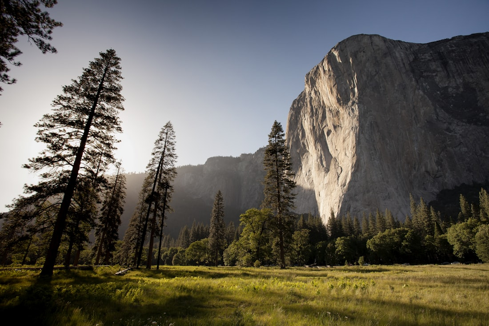
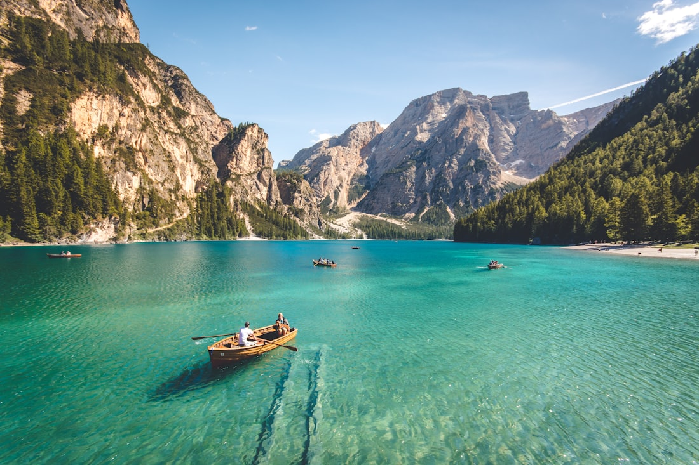

The retreat
We built a place around the idea of enough.
Fallow began with a tired teacher, a derelict farm, and a stubborn conviction that wellness had gotten too busy. This is what it became.

Where it started
A farm that had been worked too hard.
In 2016, Maren Llewellyn — a yoga teacher of two decades, burnt thin by her own retreat calendar — bought a failing hill farm at the end of a single-track lane in Powys. The soil was exhausted. The barns leaked. The previous family had farmed it without pause for three generations.
She left two of the fields completely alone. No grazing, no crop, no plan. Within a year the bare ground had filled with yarrow, knapweed and orchids she'd never planted. The land knew how to recover; it only needed to be left.
That became the whole idea. Fallow opened to its first eight guests in the spring of 2019, and we have changed almost nothing about it since.
What we believe
Rest is not a reward for productivity, and it is not a technique to be optimised. It is a state the body already knows how to find — if you stop interrupting it. Everything here is arranged to stop interrupting it.
Five things we hold to
The principles behind every program.
Small, always
Fourteen guests is the maximum, and we'd rather run with ten. A retreat stops being restful the moment it becomes a crowd. You will know everyone's name by the second evening.
Nothing to keep up with
There is no schedule you can fall behind on. Practices are offered, never required. Skip the morning sit and sleep instead — that may be exactly the work you came to do.
The body leads
Our teaching is gentle and unambitious by design. We are not interested in the deepest backbend you can manage. We are interested in the nervous system letting go of its grip.
Real food, grown close
Three meals a day from the kitchen garden and a few trusted farms down the valley. Vegetable-forward, generous, and eaten together at one long table. No counting anything.
The land does half the work
We don't believe we heal anyone. The fields, the weather, the silence and the walking do most of it. We just hold the gate open and keep the kitchen warm.
Leave lighter
Success, for us, is that you drive back down the lane having put something down. Not a new regime to maintain — simply a little more room than you came with.
The shape of a day
Slow, but not empty.
A day at Fallow has a gentle structure you can lean on or ignore entirely. Bells are soft. Nothing starts early for the sake of it. The long blank afternoon is the point, not a gap to be filled.
See full program itineraries →-
7.30
Wake to the bell, or don't
Tea and the wood stove in the long room. The kettle is always on.
-
8.00
Morning practice
Ninety unhurried minutes of hatha and breath in the barn, ending in stillness.
-
9.45
Breakfast, slowly
A long shared table, mostly in comfortable quiet.
-
11–4
The open afternoon
Walk the lanes, sleep, read, sit by the river, or help in the garden. Nothing is planned.
-
5.30
Dusk yin & restorative
Floor practice and a long held silence as the light goes.
-
7.00
Supper at one table
The day's largest meal, then the fire, and an early, complete dark.
The land itself
Twenty acres that look after themselves.
Two meadows left fully fallow, a small ancient woodland, a spring-fed pond, and the old orchard we've slowly brought back. A brook runs the western edge and there are six miles of walkable lanes from the gate before you meet a road.
We farm none of it for profit. The kitchen garden feeds the table and the rest is allowed to be wild — which turns out to be the most restorative thing on the property.

If this sounds like the rest you need
Find the days that fit.
Our programs are built around this same slow rhythm — choose by length, season, or simply by which dates let you exhale soonest.